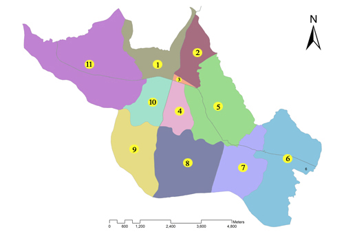

Topography

Topographic Information
| Elevation | : | 394-522 m |
| Devt. Region | : | Central |
| Zone | : | Narayani |
| District | : | Makawanpur |
| Dist. from Capital | : | 25 m |
| Area | : | 44.50 sq km |
| Forest | : | 23% |
| Agricultural Land | : | 45% |
| Residential Area | : | 11% |
| Industrial Area | : | 10% |
| City | : | 7.5% |
| Other | : | 4.5% |
| No of Wards | : | 11 |
| Establishment | : |
Gaun Panchayat -> 2018 Nagar Panchayat -> 2046 Municipality -> 2048 B.S. |